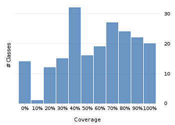
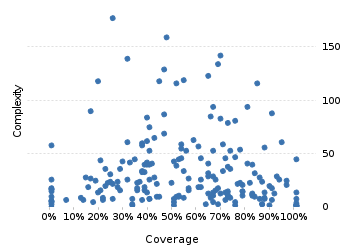

Project overview
Code coverage 228 classes, 11,783 / 21,538 elements
0.5470795654.7%
Test results 275 / 397 tests 1.61 secs
0.692695269.3%
Code metrics
4,882
12,842
3,814
228
157
7
68,718
27,801
6,977
0.54
3.37
16.73
32.57
1.83
Class Coverage Distribution

Class Complexity

Coverage tree map
Generating Coverage Tree Map. Please wait...

Top 20 project risks
DateTimeFormatterBuilder.MatchingParser
DateTimeZoneBuilder
DateTimeZoneBuilder.RuleSet
ZoneInfoCompiler
PeriodFormatterBuilder.Separator
DateTimeZoneBuilder.OfYear
DateTimeZoneBuilder.PrecalculatedZone
PeriodType
ZoneInfoCompiler.Rule
PeriodFormatterBuilder.SimpleAffix
ZoneInfoCompiler.DateTimeOfYear
FieldUtils
PeriodFormatterBuilder.FieldFormatter
ConverterSet
ZoneInfoCompiler.Zone
DateTimeParserBucket.SavedState
PeriodFormatterBuilder.Composite
ImpreciseDateTimeField
DateTimeFormatterBuilder.NumberFormatter
DateTimeFormatterBuilder.Composite
Most complex packages
| 1. | 0.422718342.3% |
org.joda.time 2458 |
| 2. | 0.5830694458.3% |
org.joda.time.format 1496 |
| 3. | 0.6381773463.8% |
org.joda.time.chrono 1239 |
| 4. | 0.510638351.1% |
org.joda.time.field 667 |
| 5. | 0.7966274679.7% |
org.joda.time.tz 535 |
Most complex classes
| 1. | 0.2533589325.3% |
LocalDateTime 179 |
| 2. | 0.4702258747% |
LocalDate 161 |
| 3. | 0.690839769.1% |
DateTimeZone 144 |
| 4. | 0.3174603331.7% |
DateTime 141 |
| 5. | 0.68663668.7% |
PeriodFormatterBuilder.FieldFormatter 136 |